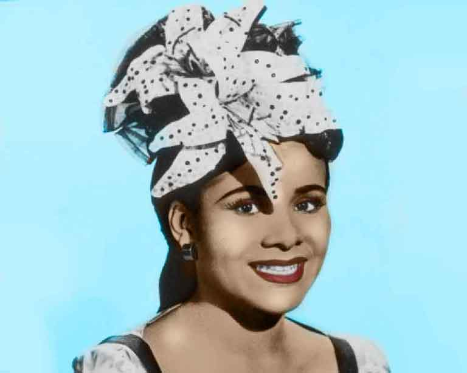

Katherine Dunham
American dancer-choreographer

Katherine Dunham in a 1945 studio portrait wearing a costume accented with ruffle tufts and artificial orchids in her hair. Color composite of black and white photo by Rai.
A timeline of Dunham's life and accomplishments:
- 1909 →Katherine Dunham was born in Chicago on June 22,1909 to an African American father and a French Canadian mother.
- 1928 →She began to study ballet with Ludmilla Speranzeva, Vera Mirova, Mark Turbyfill and Ruth Page
- 1929 →She attends the University of Chicago to study Anthropology with a focus on dance.
- 1930 →Dunham forms her on dance company Ballet Negre. A year later the Company disbands.
- 1935 →She receives an award from the Julius Rosenwald Fund and travels to the West Indies to conduct research in Accompong, Jamaica, Martinique and Trinidad.
- 1936 →Dunham receives her bachelor's in Philosophy and embarks on a trip to Haiti.
- 1939 →Ballet Negre continuies its success with presentations in Chicago, New York and the West Indies.
- 1941 →She performs on Broadway and at the Curran Theater in San Francisco.
- 1951 →She tours South America, Europe and North Africa
- 1960 →The Company appears on German television and disbands, only coming together for special events.
- 1975 →After many awards for her work, Dunham moves to St. Louis.
- 1980s →Dunham receives honarary doctorates from South Illinois University, Lincoln University, and Howard University.
- 1990s →Haiti Awards her citizenship. She joins Univeristy of Hawaii as a lecturer.
- 2006 →Katherine Dunham passes away on May 21, 2006
I certainly feel my career was a great career because it inspired so many many people, literally hundreds of people to follow a new kind of life and to realize that they could make out and advance their own professional and private and social lives. - Katherine Dunham
Learn more about how to apply for the Katherine Dunham Technique Teaching Certification.